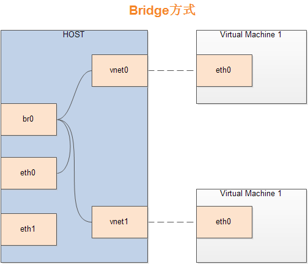

网上关于KVM的简单使用教程有很多，但通常都是通过桌面的方式进行管理和使用，而且大部分教程中都忽略了很多重要的细节，且应用场景都较为简单。本文提供的教程主要用于有多人需要大量的虚拟机使用需求，要能够让大家非常方便地随时创建和删除虚拟机，支持通过SSH进行连接，同时支持通过VNC进行远程虚拟机桌面的连接（安装虚拟机系统时肯定需要，当然服务器带桌面例外）。当然如果使用OpenStack会方便很多，但毕竟Openstack配置非常复杂，其实采用KVM的初衷就是为了将来迁移到Openstack做个过度。
假如你不幸看到本文，觉得本文太长，第一次看的时候可以跳过一些内容，我会在文注明，如果你在实践过程中遇到一些问题，建议你多看几遍，也许会有新的发现。强烈推荐多参考官方man手册，本文使用的测试环境主要是Ubuntu16.04和Debian 8，在Ubuntu14.04上的一些问题都有说明。看完本文后你将收获：
* 配置KVM虚拟机环境，即可支持通过桌面的方式安装虚拟机，又支持纯命令行
* 配置非root用户创建KVM虚拟机
* 配置虚拟机通过桥接连网，并解决很多人没有提到的桥接后导致本地网络异常的问题
* 远程VNC连接虚拟机并安装系统
* 虚拟机克隆
* 虚拟机系统镜像制作及布署
* 无需进入虚拟机的情况下获取到虚拟通过DHCP获得的IP
* 虚拟机日常管理命令本文参考的国内外资料非常多，基本重要的内容都涵盖进来了，所以虽然有点长，但很有意义
关于KVM
KVM全称是基于内核的虚拟机（Kernel-based Virtual Machine），它是Linux的一个内核模块，该内核模块使得Linux变成了一个Hypervisor。KVM 本身不执行任何硬件模拟，需要客户空间程序通过/dev/kvm接口设置一个客户机虚拟服务器的地址空间，向它提供模拟的I/O，并将它的视频显示映射回宿主的显示屏，目前这个客户空间程序是QEMU，从QEMU的角度看，QEMU使用了KVM模块的虚拟化功能，来为自己的虚拟机提供硬件虚拟化加速。所以后面讲到的虚拟机的创建和管理过程其实就是qemu与kvm的配合调用过程，而libvirt又是一个C语言实现的虚拟机管理工具集，即由它提供的API来实现对qemu和kvm的这些管理过程，所以下面会大量涉及到libvirt提供的工具。由于KVM要求CPU支持，比如英特尔的VT或ADM-V，有些主板会在主板中默认禁用CPU的虚拟化支持，所以最好先进入BIOS中确认自己的CPU虚拟化功能处于开启状态。
验证主机是否支持硬件虚拟化
方法1：通过命令验证
首先运行如下命令：egrep -c ‘(svm|vmx)’ /proc/cpuinfo
该命令会统计cpuinfo文件中svm和vmx出现的次数。其中svm是ADM的ADM-V虚拟化技术标识，全称secure virtual machine，vmx是Intel的硬件虚拟化技术VT-x，标识是vmx，全称为virtual machine extension。如果返回的是数字0，则表示你的机器不支持KVM或者bios中没有开启硬件虚拟化。
方法2：通过软件验证
安装cpu-checker之后通过运行kvm-ok来验证：
1 | sudo apt-get install cpu-checker |
默认情况下，下面运行的命令后面的输出都会直接在命令后面贴出，不带$符的地方表示命令输出结果，#后面接注释。
出现上述提示表示机器也支持kvm虚拟化，如果你的提示如下：
1 | INFO: Your CPU does not support KVM extensions |
不好意思，表示你的机器不支持KVM，可以进入bios之后查看是不是CPU虚拟化功能没有开启。
安装KVM相关依赖
为了便于管理和使用KVM虚拟机，需要安装如下软件，后面需要用到的其他软件会再提示单独安装：
1 | sudo apt-get install kvm qemu-kvm libvirt-bin virtinst bridge-utils |
它们的作用分别为：
- kvm: KVM的内核，通常linux系统自带
- qemu-kvm: KVM的设备模拟器，实际上kvm只是负责加速，qemu才是虚拟机管理器
- libvirt-bin: libvirt库，虚拟机命令行管理工具，包含很多实用工具，如后面需要大量使用的virsh。（安装之后会生成一个名为virbr0的网桥）
- virtinst: 虚拟机创建（virt-install）和克隆工具（vrit-clone）等
- birdge-utils: 用于桥接网卡的工具，如命令brctl）
如果有图形化桌面，推荐安装virt-manager，这个工具可以非常方便地图形化管理虚拟机，就像常见的virtualbox/vmware界面那样，可以通过点点鼠标来完成虚拟机的管理。
KVM管理工具的一些注解及一些实用工具
- libvirt：操作和管理KVM虚机的虚拟化API，使用C语言编写，可以由Python,Ruby, Perl, PHP, Java等语言调用。可以操作包括KVM，vmware，XEN，Hyper-v, LXC，virtualbox等 Hypervisor。
- virsh：基于libvirt的命令行工具，后面需要大量使用
- virt-v2v：虚机格式迁移工具，该工具与virt-sysprep都包含在包libguestfs-tools中，后面布署中会用到
- virt-install：创建KVM虚机的命令行工具
- virt-viewer：连接到虚拟机屏幕的工具，需要主机有桌面环境，该工具需要单独安装sudo apt-get install virt-viewer
- virt-clone：虚机克隆工具
- virt-top：类似于linux系统下的top命令，可以显示所有虚拟机CPU、内存等使用情况，该工具需要单独安装sudo apt-get install virt-top
设置网络
这里是最容易卡住人的地方，特别是桥接网络设置，如果你没有让虚拟机通过网卡DHCP分配独立IP以及从其他机器访问虚拟机的需求，可以直接使用NAT方式上网，暂时跳过桥接方式，有需要时再来看。
让虚拟上网的方式主要有两种，默认情况下使用NAT方式，即虚拟机利用主机的ip进行上网，对外网来说主机和虚拟机只显示一个ip；另一种方式是Bridge方式，即将虚拟机桥接到host机器的网卡上，guest（虚拟机）和host（实机）机器都通过bridge上网，对外显示不同的ip，相当于虚拟机网络和主机网络是平等的，都由路由器来分配（如果是通过dhcp动态由路由分配ip的话），当然也可以手动配置静态路由。下面分别讲解配置步骤
NAT网络
想快事体验虚拟机安装之后的样子，可以先跳过网络设置
NAT即Network Address Translation，网络地址转换，其实就是将IP数据报头中的IP地址转换为另一个IP地址的过程，主要用于实现私有网络访问公共网络的功能，我们这里也只是利用NAT来实现虚拟机共享主机的网络。
KVM虚拟机环境安装之后会有个默认的网络设备称为’default’，该网络实际上桥接在虚拟网卡virbr0上，这个虚拟网卡是在安装libvirt-bin时自动创建的，该虚拟网卡通过NAT方式管理连接，可通过如下命令查看：
1 | sudo virsh net-list --all |
可以看到我们有一个default网络
假如不小心通过brctl（用于管理桥接网络的工具）删除了default网络，可以通过重新加载预置的XML文件来恢复：
1 | sudo virsh net-define /usr/share/libvirt/networks/default.xml #重新定义网络 |
查看default网络信息
1 | sudo virsh net-info default |
从输出中可以看到它桥接自网卡virbr0。
查看virbr0的信息：
1 | brctl show virbr0 |
通过brctl可以查看所有桥接网卡信息：
1 | sudo brctl show |
你电脑没有做过桥接的话可能没有br0和vnet0，可能你会发现，为什么有时候我没用sudo，有时候用了，其他brctl命令几乎都不需要sudo权限。
可以将default网络参数dump到XML文件中，意义就是可以用该文件为虚拟机创建网络设备，比如上面的virsh net-define命令：
1 | sudo virsh net-dumpxml default > default.xml |
default.xml文件内容形如：
1 | <network> |
从图中可以看到default网络设置为虚拟机分配IP的范围是192.168.122.2 ~ 254以及端口范围
NAT模式下虚拟主机可以连外网，但外界无法访问该虚拟主机，其实如果你使用NAT方式上网，可以直接不用做任何设置就可以让虚拟机上网。这些命令是为了后面设置桥接网格时有个基础，如果遇到问题也好知道从哪里下手查找问题。
Bridge网络
Bridge方式即虚拟网桥的网络连接方式，通过这种方式可以让客户机和子网里的其他机器互相通信。虚拟机可以成为网络中具有独立IP的主机，相当于一台与物理机处于同等网络环境中主机。桥接网络（也称物理设备共享），原理就是创建一个桥接接口br0，在物理网卡和虚拟网络接口之间传递数据，此时实际上是将物理网卡置为混杂格式，以便让网卡可以侦听多个IP，虚拟机网卡桥接在物理网卡上获得独立IP。
大致如下图：

配置过程如下：
1.首先备份网络配置，以便出错时恢复：
1 | sudo cp /etc/network/interfaces /etc/network/interfaces.bakup |
2.编辑网络配置，将eth0映射到br0，这里假设你电脑的物理网卡名称为eth0，注意不要随意修改网卡名称，如果你的网卡配置文件中auto后面的那个就是你的网卡名，只需要将下面的eth0换成你自己的网卡名就可以了：
1 | sudo vi /etc/network/interfaces |
假如原有的网卡是eth0，且通过dhcp自动获取ip（即电脑连接路由器自动上网），注释或删除掉其他所有eth0相关的设置，其他内容不变，在文件最后添加如下内容：
1 | auto br0 |
如果原有eth0是手动配置的静态ip，则修改配置类似如下：
1 | auto br0 |
ip信息换成你自己的IP信息就可以了，关于注释中的那2句，从国外网站看到的，由于我是DHCP，不清楚是否有用，没有测试。
发现上面的内容中其实就是添加了四句内容，其中bridge_ports很明显后面跟的是你的物理网卡，也就是要桥接的网卡，如果你有多个网卡想要桥接，可以以豆号分隔多个网卡名。
关于上面其他三个选项的解释，怕解释不清楚，直接放上原话，忘了在哪看到的，可能是SOF：
- bridge_stp off is a setting for spanning tree. If you have a possibility for network looks, you may want to turn this on.
- bridge_fd 0 turns off all forwarding delay. If you do not know what this is, you probably do not need it.
- bridge_maxwait 0 is how long the system will wait for the Ethernet ports to come up. Zero is no wait.
更多关于桥接的这些配置内容，可以自己man bridge，里面有各个参数的详细说明。
重启网络：如果是ubuntu14.04及之前系统，或者debian中不是以systemd管理，则使用命令：1
sudo systemctl restart networking
如果网络重启失败，查看是不是配置文件有问题1
sudo /etc/init.d/networking restart
如果确定配置文件没有问题，可以尝试使用ifconfig命令重启网卡试试如果该命令也失败，或不能运行，就直接重启系统试试1
2sudo ifconfig eth0 down
sudo ifconfig eth0 up
现在通过brctl命令查看网络桥接情况，里面会多一个br0：
1 | sudo brctl show |
关键在下面
通过ifconfig命令查看网络情况：
1 | ifconfig |
输出信息太多，我就不贴出了，关键查看br0是否有ip地址，且ip为你之前物理网卡的ip，而且这个时候你的物理网卡应该没有ip了，主机通过br0上网。
如果你运行ifconfig提示查无些命令，安装net-tools就可以了，或者使用ip命令，新系统中一般变成了ip命令。
插播一张不错的图：
通过ip命令查看网络情况：
1 | sudo ip a show #查看网络 |
测试主机是否可以正常上网：
1 | ping -c 4 baidu.com #ping外网试试 |
ifconfig查看如果br0中有ip，而eth0中没有ip，并且电脑能ping能外网，则表示设置成功。如果出现了eth0中依然有ip的情况，可以尝试重启电脑试。如果依然主机不能上网，或者说物理网卡上通过ifconfig还有ip，就将上面代码中的bridge_stp off改成on再重启电脑试试，如果依然有问题，就注释掉试试，同样每次修改完网卡信息之后都需要重启网络服务，如果网络服务重启有问题，重启电脑是最简单的解决方法。
桥接网络这里我遇到很多问题，各种偶然问题，如果你也遇到了，可以尝试认真查看以下内容：
- man手册: man bridge-utils-interfaces
- debian官方的Bridging Network Connections: https://wiki.debian.org/BridgeNetworkConnections
- ubuntu官方的Bridging Ethernet Connections (as of Ubuntu 16.04): https://help.ubuntu.com/community/NetworkConnectionBridge
- KVM官方的Networking: https://help.ubuntu.com/community/KVM/Networking
我尝试3台电脑，现在都是按上面的配置来的，可能重启网卡后依然有问题，但直接重启电脑就都可以了。网上有教程说如果是桌面系统的话需要停止网络管理服务，我这里在桌面版系统上测试过，可以不用管系统的网络管理服务。如果你那里有问题，可以查看这里停止网络管理服务试试：
http://xmodulo.com/disable-network-manager-linux.html
以后的所有虚拟机网络里面都设置为桥接模式，并使用br0就可以了，所有虚拟机都会通过路由器的DHCP获得一个独立的ip
其他相关内容
安装完bridge-utils之后，直接修改网络配置文件interfaces文件就可以了，不需要像有些教程中说还要手动通过brctl创建br0，然后再修改，那样反而会导致各种奇葩问题。
如果你真得通过brctl进行了一些br0的增删操作，可以自行man一下手册，删掉br0，然后修改好网络配置文件后直接重启电脑，然后查看br0的状态，如果删除时出现问题，提示无法删除，需要停止网络服务或者直接通过ifconfig停掉网络设备试试。
创建虚拟机
可以有多种方式创建虚拟机，下面分别讲解
为了使非root用户也能够直接通过virsh命令管理虚拟机，需要将普通用户加入用户组kvm和libvirt。命令如下：
1 | sudo adduser <youruser> kvm |
重新装入更新后的群组成员信息，如下所示。看到要求输入密码的提示后，输入你的登录密码。或者重启生效
1 | exec su -l $USER |
使用非root用户应该已经可以查看所有虚拟主机列表了：
1 | virsh list --all |
libvirt默认将qemu:///session给非root用户，所以也可以使用下面的方式查看虚拟机列表，就是增加了一个–connect qemu:///system参数
1 | virsh --connect qemu:///system list --all |
可以通过修改变量LIBVIRT_DEFAULT_URI来修改这个默认设置，查看：
1 | echo $LIBVIRT_DEFAULT_URI |
使用virsh-install创建虚拟机
这也是本文讨论的KVM创建的主要方式
下面是一些libvrit管理的虚拟机默认的位置：
- libvirt默认文件夹（几乎所有KVM相关的管理和配置文件都在该文件夹）: /var/lib/libvirt/
- 默认用户安装系统的ISO镜像文件夹，该文件夹可以手动指定: /var/lib/libvirt/boot/
- 虚拟机的默认磁盘所在的文件夹，该文件夹可以手动指定: /var/lib/libvirt/images/
- Libvirt存放LVM/LXC/qemu的配置文件夹: /etc/libvirt/
为了确认KVM模块已经加载，可以运行以下命令加载：1
2
3sudo modprobe kvm
sudo modprobe kvm-amd # for AMD CPUs
sudo modprobe kvm-intel # for Intel CPUs
类似地如果需要使用虚拟网卡tun设备，则进行tun设置加载命令为：
1 | sudo modprobe tun |
下面使用virt-install命令创建虚拟机，虚拟机信息为：系统是Centos7，1GB RAM， 1 CPU core，20GB硬盘，磁盘格式设置为raw，使用默认的NAT方式连接网络：
1 | virt-install \ |
下面是各参数的意义：
- –virt-type=kvm: 使用KVM作为虚拟机监视器
- –name=Centos7: 虚拟机实例的名字，每个虚拟机的名字都不能一样，不能有空格
- –ram=1024: 指定虚拟机内存大小，单位是Mb
- –vcpus=1: 为虚拟机指定分配的虚拟CPU核数
- –os-variant=rhel7: 指定虚拟机系统所属系列以优化虚拟机参数，可以通过命令
osinfo-query os来显示所有支持的系统列表，osinfo-query在包libosinfo-bin中sudo apt-get install libosinfo-bin - –hvm: 启用全虚拟化，KVM虚拟机支持全虚拟化，属于优化性参数
- –cdrom=/home/vhost/CentOS-7-x86_64-Minimal-1511.iso: 指定作为虚拟机光驱内容的设备或文件，可以是主机的CDROM或者iso文件。
- –network network=default,model=virtio: 将虚拟机连接到主机网络，此处连接到一个名为defalut的虚拟网络（即让虚拟机使用NAT模式上网），网卡模式设置为virtio。如果使用桥接模式，则只需要改参数为–network=bridge=br0,model=virtio即可。
- –graphics vnc: 设置虚拟机的console并将其输出到VNC，这样就可以通过VNC来连接虚拟机了。同时可以指定vnc的端口和监听范围以及密码: –vncport=5910 –vnclisten=0.0.0.0。默认情况下端口为从5900开始的第一个空闲端口，监听范围为本机127.0.0.1，修改为0.0.0.0以使外网主机可以连接。后面会讲对于只支持SSH协议的情况下，如何通过SSH隧道连接，所以是否设置为0.0.0.0没有影响，但能设置为0.0.0.0的话，还是设置为0.0.0.0，毕竟直接通过VNC连接更加方便。这些参数也可以在/etc/libvirt/qemu.conf中修改，以使其对所有虚拟机生效，VNC默认连接没有密码。VNC可以理解为linux下的远程桌面
- –disk path=/home/vhost/centos7.img,size=20,bus=virtio,format=raw: 指定虚拟机所使用的存储路径，大小为20G，disk bus类型为virtio，磁盘格式为raw，如果不指定fortmat，则默认格式即为raw。
网络和磁盘建议都设置为virtio，virtio即启动优化的虚拟机专用IO驱动，性能更好。
磁盘格式使用qcow2更好，因为qcow2格式即QEMU支持的QEMU Copy On Write磁盘格式，是优化后的磁盘格式，支持快照，并且是使用多少占用多少空间。例如你分配了20G大小，如果是raw格式，则立即占用20G，而qcow2则是从很小开始，用多少，占用多少。之前有些人说qcow2性能不如raw，这两种格式可以使用qemu-img进行转换，qemu-img在包qemu-utils中。
等待命令执行完成之后，虚拟机就会直接运行，可以通过以下方式查看：
1 | virsh list |
或者：
1 | virsh --connect qemu:///system list |
后面默认都是使用virsh不带–connect的方式管理虚拟机，因为前面已经添加过用户组了，所以不用多输入那些参数。
此时可以通过VNC连接到该虚拟机来进行系统安装了，可以直接跳到后面的VNC连接处查看方法。假如你的系统带有桌面，并且安装了virt-viewer，系统应该会自动启动并显示虚拟机系统安装界面。如果没有可以手动通过vrit-manager来进行查看，或者手动在命令行中输入virt-viewer <host-name>打开虚拟机界面，进行系统安装。
以配置ubuntu 16.04系统再举一例，内存2G，CPU为2核，只是网络改为bridge方式，磁盘格式改为qcow2，如下：
1 | virt-install \ |
如果你按照上面的方式遇到错误提示：ERROR Format cannot be specified for unmanaged storage.是因为你指向的磁盘文件所有硬盘分区没有指定为libvirt的存储池，将你想要存放的虚拟机路径所在目录加入pool管理即可，默认情况下/var/lib/libvirt/images是在pool中的。 请参见下面的 为KVM增加storage pool
ubuntu14.10系统下的virt-install命令在安装时有时候指定的磁盘文件会出现错误ERROR cannot stat file ‘/home/youruser/vhost/image/win7.qcow2’: No such file or directory
没有发现什么原因，感觉有几率性的会出现，如果出现了这样的情况，那就手动使用qemu-create创建，然后在path那里指定路径，注意使用已经磁盘文件时不要指定size选项，size选项表示让virt-install自动创建指定大小的磁盘文件。感觉ubuntu16.04下的libvirt更稳定
通过XML文件创建虚拟机
这个方法与virt-install的方式其实是一样的，只是这个是通过配置文件来创建
当需要将已有的虚拟机信息转储为xml文件时，可以使用以下命令：
1 | virsh dumpxml centos7 > centos7.xml |
当需要从一个xml文件创建虚拟机时，可以使用命令：
1 | virsh create centos7.xml |
但首先必须先创建所需要使用的磁盘文件，磁盘创建使用qemu-img命令：
1 | qemu-img create -f qcow2 /home/vhost/image/centos7.qcow2 10G |
上面的命令在文件夹下/home/vhost/image/下创建一个名为centos7.qcow2的硬盘文件，格式为qcow2，大小为10G。这里的格式并不是指虚拟机系统中的硬盘格式，虚拟机系统中的硬盘格式可以根据需要进行格式化即可。这里的格式是指虚拟机管理系统组织磁盘文件的格式。
其实xml文件中指定了通过上面virt-install创建虚拟机的参数，当然如果你已经有了一个磁盘文件需要启动，即可以通过qemu-system来启动，也可以通过创建一个这样的xml文件来启动。例如当你需要迁移虚拟机的时候就可以先导出其配置文件为xml，然后将配置文件和磁盘文件一起都迁移之后通过virsh create定义并启动虚拟机，只需要修改里面的磁盘路径即可。
内容通常如下：
1 | <domain type='kvm'> |
上面的xml文件内容指定创建的虚拟机为centos 7系统，2G内存，磁盘是通过qemu-img提前创建好的，所以这里不需要指定其大小。网络连接是通过网桥br0进行连接，vnc监听所有连接，以便可以通过外网直接使用VNC连接，假如你的VNC只能监听127.0.0.1，那么可以通过建立SSH隧道的方式进行VNC的远程连接。为了远程可以直接连接VNC，建议直接监听0.0.0.0，这样就可以在远程直接通过你的主机IP号后跟端口号的方式进行VNC连接了。当然通过SSH隧道连接更安全，毕竟SSH是加密协议
每一台虚拟机应该指定一个唯一的uuid，可以通过命令行工具uuid来生成一个随机的uuid，如果系统中没有uuid工具，可以通过命令安装：sudo apt-get install uuid，然后输入uuid就会生成一个随机的uuid号。
利用这种方式创建的虚拟机在运行之后默认启动项是cdrom，即你指定的系统映像，所以在安装完之后需要通过编辑掉配置文件中的boot选项中的启动方式为hd，否则启动系统后还是会从cdrom启动。这个时候系统刚安装好应该没有acpi服务，也就无法通过virsh shutdown关闭系统，可能通过virsh destroy centos7来强制关闭并undefine系统。然后编辑掉配置文件中的启动选项之后再次通过virsh create centos7.xml创建并启动系统即可。
如果想第一时间体验系统安装过程，可以直接跳过下面的xml内容解析，进入VNC连接系统步骤，当然如果你的宿主主机有桌面系统，可以直接使用virt-manager进行安装系统。
插一句，如果你的centos虚拟安装完成之后无法连网，查看是不是网卡没有设置为开机自动启动。我测试中发现centos7安装完系统之后网卡并不会开机自动启动。可以通过编辑cd /etc/sysconfig/network-scripts/ifcfg-eth0来将最后的ONBOOT修改为YES，将其设置为开机自动启动，然后重启系统，这里假设你的网卡名为eth0，可以通过ip a show命令来查看。或者手动启动网络服务service network restart
下面是xml文件的解析：
1 | <domain type='kvm'> |
通过virt-manager创建虚拟机
这个只能用于已经有了桌面系统的情况下，，运行virt-manager即可，这种方式的虚拟机的创建过程与virtualbox类似，点点鼠标，按提示操作即可。
使用qemu-img和qemu-kvm命令行方式安装
这种方式创建的虚拟机好像性能有点差，可能还会有一些其他问题，没有深度测试，非redhat系统不推荐使用该方式。
（1）创建一个空的qcow2格式的镜像文件
1 | qemu-img create -f qcow2 centos7.qcow2 10G |
（2）启动一个虚机，将系统安装盘挂到 cdrom，安装操作系统，分1G内存，当然如果需要x86系统，则替换下面的命令为qemu-system-i386
1 | qemu-system-x86_64 -hda centos7.qcow2 -m 1024 -boot d -cdrom /home/vhost/centos7.iso |
所以如果你的磁盘文件中已经有了系统，可以使用该命令直接启动系统
（3）现在你就拥有了一个带操作系统的镜像文件。你可以以它为模板创建新的镜像文件。使用模板的好处是，它会被设置为只读所以可以免于破坏。
1 | qemu-img create -b centos7.qcow2 -f qcow2 centos7-clone.qcow2 |
其实就是从上面已经安装好的磁盘文件中复制为一块新的磁盘文件，这样原有的磁盘中系统就不会被破坏了，后面会讲如何使用封装好的系统进行克隆、布署
（4）你可以在新的镜像文件上启动虚机了
1 | qemu-kvm -hda centos7.qcow2 -m 1024 |
还是推荐使用第一或第二种方式创建虚拟机，并且virsh管理虚拟机非常方便，后面通过一系列脚本来实现自动化的根据已经封装好的镜像创建和布署虚拟机。
VNC连接虚拟机
当使用命令模式创建完虚拟机之后需要使用VNC来连接虚拟机才能进行系统安装等配置，比如安装SSH服务等，运行以下命令查看vnc信息，下面分配介绍两种方式通过VNC连接：
直接通过VNC viewer连接
如果要使用VNC直接进行连接，需要在刚才创建虚拟机时指定VNC监听为0.0.0.0，即监听所有连接。否则请直接看下面的使用SSH隧道连接的方式。
查看VNC端口号
首先查看VNC监听的端口号，只有虚拟机运行期间才会有针对虚拟机的VNC监听端口：
通过将虚拟运行期间的配置文件dumpxml出来后，使用grep输出的方式查看：
1 | virsh dumpxml centos7 | grep vnc |
输出中会包含有vnc所监听的端口号，通常是5901，我这里就是5901，从这里可以看出我这里监听ip是本地。
通过virsh命令查看：
1 | virsh vncdisplay centos7 |
如果显示结果为127.0.0.1:1，则表示端口为5901，因为vnc端口默认是从5900开始分
通过查看系统网络监听的方式查看：
1 | netstat -nap | grep qemu |
如果grep qemu没有，试试grep kvm，或者直接grep 590，因为默认VNC从5900开始监听。这种方式最不直观，当有多台虚拟机是，无法区分哪一台的端口号是多少。
通过VNC viewer连接
如果宿主主机有桌面环境并且你的虚拟机在配置时VNC监听ip设置为本地，此时可以直接在宿主机（即你安装KVM的主机）通过VNC客户端连接，在VNC客户端中输入127.0.0.1:5901即可，这里假设虚拟机是通过5901端口连接，这种情况要求你安装KVM的环境必须要有桌面环境，其实有了桌面环境就不需要这样了，直接通过virt-manager就可以直接管理了。VNC客户端可以通过VNC官方下载安装，或者直接使用系统中的vncviewer 127.0.0.1:5901连接，vncviewer在包gvncviewer中。
如果配置虚拟机时的VNC监听IP设置为0.0.0.0，那么就可以通过外部网络（指可以通过你宿主主机IP访问宿主主机的网络，通常是同一路由器下的子网）使用宿主主机的IP与虚拟机被监听的VNC端口进行连接。
也可以通过修改/etc/libvirt/qemu.conf中的vnc_listen=”0.0.0.0”来使其监听所有IP，否则只监听本地端口，也就只能从服务器本地登录指定虚拟机。同样里面可以修改vnc_password，当然也可以在安装时指定这些参数，或者在相应的xml配置文件中修改。默认情况下/etc/libvirt/qemu.conf中的配置是注释掉的，一旦将其注释取消，则会覆盖通过虚拟机进行的设置。
如果是Windows系统则直接从REALVNC官方网站 https://www.realvnc.com/download/viewer/下载VNC viewer安装，然后打开VNC viewer输入<宿主主机ip>:
如果连接时闪退，可以尝试将VNC的File->Preference->Expert->ColorLevel中的Value值修改为full，保存后再次连接虚拟机即可
使用SSH隧道通过VNC连接
下面说说对于没有桌面环境的服务器系统且无法使用VNC或者考虑到安全连接的情况下，如何通过SSH隧道的方式加密连接，来让VNC走SSH隧道进行远程连接安装系统（因为有了系统后就可以安装SSH服务了嘛）。因为 VNC支持通过ssh协议建立连接。首先确定你的服务器可以正常通过SSH进行连接访问，然后在需要连接KVM的电脑上使用ssh建立隧道。假如你的宿主主机连SSH连接都不可用，肯定不可能的了。
Linux系统建立SSH隧道并连接
如果你是linux系统，非常方便，直接使用以下命令建立隧道即可：
1 | ssh foobar@192.168.1.102 -L 5901:127.0.0.1:5900 |
这里ssh foobar@192.168.1.102，表示建立ssh连接到KVM虚拟机192.168.1.102，-L表示启动端口转发， 5901:127.0.0.1:5900 表示建立隧道转发本地127.0.0.1的5901端口的访问到远程的5900端口，这里假设你需要访问的KVM虚拟机的VNC监听端口是5900.
运行这条命令之前还要确保你本地的5901端口在闲置，可能通过：
1 | sudo netstat -nap | grep 5901 |
来查看，如果返回结果为空，则表示5901端口没有被占用，然后通过localhost:5901/127.0.0.1:5901来使用VNC客户端连接你的KVM虚拟主机进行系统安装。哪台电脑需要连接那个KVM虚拟机，就在哪台电脑上建立SSH隧道即可。
Windows系统建立SSH隧道并通过VNC连接
如果你需要连接KVM虚拟机的电脑是windows，则可以通过putty建立tunnel，然后打开VNC客户端连接，putty如何建立SSH隧道：
打开putty，Host name中输入服务器IP，端口默认22。点开左侧的SSH选项，点击Tunnels，source port中输入你想使用的本地端口，Destination中输入你需要建立隧道的本地IP和远程虚拟机的VNC监听端口，点击Add后，Open即可，此时需要输入服务器用户和密码（dutoeserver）。这样就建立好了SSH隧道。如果有多台虚拟机，则通过add一次可以添加多个监听隧道。如我有虚拟机3台，分别端口为5901、5902、5903，则我可以Source port中填写5901，然后Destination中填写127.0.0.1:5901，点击Add，其他两个端口类似添加。最后点击Open即可。
通过putty建立好SSH隧道之后不要关闭putty窗口，然后再打开VNC
viewer，输入127.0.0.1:5901即可连接5901对应的虚拟机，可以根据不同的VNC端口同时连接多个虚拟机。
有些windows下的ssh软件支持像linux那样直接通过一行命令创建SSH隧道，例如mobaXterm
KVM虚拟机常用管理命令
KVM虚拟机默认配置文件位置: /etc/libvirt/qemu/，该目录下存放了所有创建过的虚拟机配置文件。
查看virt-install所有支持的OS参数列表：
1 | osinfo-query os |
查看正在运行的虚拟主机列表：
1 | virsh list |
查看所有虚拟机列表：
1 | virsh list --all |
查看虚拟机信息：
1 | virsh dominfo centos7 |
启动虚拟主机：
1 | virsh start centos7 |
关闭一个名为centos7的虚拟机：
1 | virsh shutdown centos7 |
由于virsh实际上不能对虚拟机进行关机，只有虚拟机配置了acpid服务之后才能通过virsh进行关机，配置命令为：
1 | sudo chkconfig acpid on |
注意这是指在虚拟机中配置该服务
暂停/挂起虚拟主机：
1 | virsh suspend centos7 |
恢复暂停状态的虚拟机：
1 | virsh resume centos7 |
软重启（安全重启，相当于在虚拟机内部点击重启选项）虚拟机：
1 | virsh reboot centos7 |
硬重启虚拟机（不安全，有可能数据丢失，相当于强制按主机上的重启按钮）：
1 | virsh reset centos7 |
设置虚拟机随着宿主主机开机自动启动：
1 | virsh autostart centos7 |
开机自动启动的虚拟机配置文件会自动在目录/etc/libvirt/qemu/autostart/目录下生成。
用开机自动启动：
1 | virsh autostart --disable centos7 |
移除虚拟机定义，即从虚拟机列表中移除虚拟机：
1 | virsh undefine centos7 |
该命令只是删除/etc/libvirt/qemu/目录下名为centos7.xml的配置文件，并不会删除虚拟机磁盘文件
通过虚拟机配置文件重新定义虚拟机：
1 | virsh define centos7.xml |
强制关闭虚拟机电源：
1 | virsh destroy centos7 |
编辑虚拟机配置文件：
1 | virsh edit centos7 |
该命令会调用本地编辑器编辑虚拟机配置文件，虽然也可以手动使用vim去编辑/etc/libvirt/qemu/centos7.xml下的虚拟机配置文件，但不建议，最好还是通过virsh edit调用编辑器来编辑虚拟机配置文件
查看virsh的所有命令或指定的命令：
1 | virsh --help |
可以配合grep来查看某个选项相关的所有相关指令，例如我想查看跟开机有关的所有相关指令：
1 | virsh --help | grep start |
如果想看到详情，最好还是看man手册：
1 | man virsh |
查看当前主机上hypervisor的连接路径：
1 | virsh uri |
创建虚拟机硬盘（格式为qcow2，该格式创建后不会立即占用10G空间，而是在使用中动态增长；也可以是raw格式，会立即分配空间。大小为10G）：
1 | qemu-img create -f qcow2 test.qcow2 10G |
查看磁盘信息：
1 | qemu-img info test.img |
qcow2格式文件的快照管理命令：
1 | 创建快照：qemu-img snapshot -c <标签> test.qcow2 |
进入virsh管理程序：
1 | virsh |
出现virsh提示符后，你就可以使用任何virsh命令了。
上面的命令对应的非root管理用户命令，即没有将当前用户组加入到管理组，且没有root权限的用户，可以通过加入–connect qemu:///system的方式实现虚拟机的管理，如创建和移除虚拟机的命令：
1 | virsh --connect qemu:///system create centos7.xml |
感觉还是设置好用户组之后直接使用virsh管理KVM虚拟机更加方便
KVM虚拟机克隆
即可以使用virt-clone命令来进行虚拟机的克隆，也可以通过手动拷贝磁盘文件及原虚拟机的配置文件来完成克隆，注意如果使用拷贝的方式需要手动修改克隆后的虚拟机的host名称、mac信息以及配置文件中的uuid和名称，否则会冲突，当然克隆生成的虚拟机中的hostname也是一样的，同样建议修改国，但virt-clone会自动随机生成uuid、mac等信息。
通过virt-clone命令克隆命令如下，克隆虚拟机时需要确保被克隆的虚拟机处于关闭或者挂起状态。
1 | virt-clone --original=vm-to-clone \ |
–original后面需要是被克隆的虚拟机名，–name后面是你克隆后的虚拟机名，–file后面是克隆虚拟机的磁盘映像需要存放的位置，可以使用-o,-n,-f来简写，当原虚拟机有多个硬盘文件时，后面需要跟多个–file。注意virt-clone无法指定静态网络参数
virt-clone还可以指定uuid，mac等信息，省略的信息表示由virt自动生成。
virt-clone后面也可以只接–original参数，然后再接个–auto-clone参数，就是由virt-clone自动进行克隆：
自动克隆之后的输出如下：Original name : MyVM Generated clone name : MyVM-clone Original disk path : /home/user/foobar.img Generated disk path : /home/user/foobar-clone.img
也可以通过man virt-clone查看更详细的参数，
如果需要手动克隆，其实就是复制一份导出的原虚拟机配置文件到xml，将修改其中需要修改的内容，然后复制一份原虚拟机的磁盘映像文件，并在xml文件中修改相应文件，再使用virsh define定义新虚拟机的配置文件即可。
其实vrit-clone的克隆也就是复制一份原虚拟机的磁盘及配置文件,然后会在克隆时修改配置文件中的mac地址,其他原虚拟机中的所有内容都不会变化,因为virt-clone并不会修改虚拟机内容.如果想创建一个不包含个人信息及网络配置的虚拟机镜像,则需要使用virt-sysprep进行虚拟机部署镜像制作.
KVM虚拟机布署
虚拟机布署主要3步：创建虚拟机并安装系统和所需要的配置、清除虚拟机中的一些个人信息和不需要的缓存信息、克隆虚拟机。
vrit-sysprep可用于清除虚拟机磁盘镜像中的一些不需要的内容，并且可以修改虚拟机磁盘文件中的一些信息，所以可用于封闭虚拟机。
virt-sysprep包含在包libguestfs-tools,可以通过以下命令安装
1 | sudo apt-get install libguestfs-tools |
virt-sysprep可以重置虚拟机,包括清除SSH key,清除网络信息及MAC地址,清除用户账户.virt-sysprep还可以定制化虚拟机，包含SSH key，用户，logo等．
可以通过virt-sysprep --list-operations来查看virt-sysprep在封装时会清除掉哪些信息，列表中带有*的表示默认会被清除掉的信息，如下：
- abrt-data * Remove the crash data generated by ABRT
- bash-history * Remove the bash history in the guest
- blkid-tab * Remove blkid tab in the guest
- ca-certificates Remove CA certificates in the guest
- crash-data * Remove the crash data generated by kexec-tools
- cron-spool * Remove user at-jobs and cron-jobs
- customize * Customize the guest
- dhcp-client-state * Remove DHCP client leases
- dhcp-server-state * Remove DHCP server leases
- dovecot-data * Remove Dovecot (mail server) data
- firewall-rules Remove the firewall rules
- flag-reconfiguration Flag the system for reconfiguration
- fs-uuids Change filesystem UUIDs
- kerberos-data Remove Kerberos data in the guest
- logfiles * Remove many log files from the guest
- lvm-uuids * Change LVM2 PV and VG UUIDs
- machine-id * Remove the local machine ID
- mail-spool * Remove email from the local mail spool directory
- net-hostname * Remove HOSTNAME in network interface configuration
- net-hwaddr * Remove HWADDR (hard-coded MAC address) configuration
- pacct-log * Remove the process accounting log files
- package-manager-cache * Remove package manager cache
- pam-data * Remove the PAM data in the guest
- puppet-data-log * Remove the data and log files of puppet
- rh-subscription-manager * Remove the RH subscription manager files
- rhn-systemid * Remove the RHN system ID
- rpm-db * Remove host-specific RPM database files
- samba-db-log * Remove the database and log files of Samba
- script * Run arbitrary scripts against the guest
- smolt-uuid * Remove the Smolt hardware UUID
- ssh-hostkeys * Remove the SSH host keys in the guest
- ssh-userdir * Remove “.ssh” directories in the guest
- sssd-db-log * Remove the database and log files of sssd
- tmp-files * Remove temporary files
- udev-persistent-net * Remove udev persistent net rules
- user-account Remove the user accounts in the guest
- utmp * Remove the utmp file
- yum-uuid * Remove the yum UUID
Ubuntu 14.04系统下的该工具支持的清除列表要少一些，并且不支持下面要用到的–operations选项。
可以通过参数–enable/–operations选项后面跟逗号分隔的列表来指定你需要清除的选项．
通常我们只需要使用virt-sysprep -d <vm-host-name>
官方建议该工具的使用不要通过root用户进行，如果你在使用时出现的问题，可以尝试使用root权限运行试试．
我常用的命令为：
1 | virt-sysprep -d ubuntuServer-original #先清除私有化的配置 |
更详细的信息可以参见官方文档http://libguestfs.org/virt-sysprep.1.html#
批量KVM虚拟机管理脚本
下面是为了方便日常多用户使用和管理写的python脚本函数（python只是草草地看了语法，水平有限，忘谅解），可以自由组合各函数功能成为单独的命令，也可以到github去查看：https://github.com/blueyi/kvmManage
1 | #! /usr/bin/env python |
其他遇到的问题
如何获取通过桥接的DHCP为KVM自动分配的IP
创建完虚拟机之后，启动虚拟机，然后通过nmap进行同一子网下的ping扫描，nmap需要手动安装，此时会建立arp缓存，然后通过arp -an查看缓存中的ip与mac的对应关系获得KVM虚拟机IP即可。虚拟机的MAC地址可以通过virsh dumpxml中获得。
通过虚拟机配置文件获得虚拟机的MAC地址：
1 | virsh dumpxml vm-name|grep 'mac address'| cut -c 21-37` |
安装nmap：
1 | sudo apt-get install nmap |
使用nmap扫描同一子网下的所有ip：
1 | nmap -sP 192.168.1.0/24 |
通过查询arp缓存，找到MAC地址对应的虚拟机IP：
1 | arp -an | grep hostmac |
上面的脚本中都详细的代码实现
可能引起本机git无法正常使用的问题
桥接网卡后发现git无法使用，错误提示类似这样：nutls_handshake() failed GIT repository，重新编译一下git就可以了，参见这里：http://devopscube.com/gnutls-handshake-failed-aws-codecommit/
如何为KVM虚拟机增加网卡
使用virsh attach-interface命令可以为虚拟机testbr动态永久增加一个virtio驱动的bridge网卡：
1 | virsh attach-interface testbr --type bridge --source br0 --model virtio --persistent |
如果不加最后一下参加–persistent，就只在当前虚拟机状态下生效，重启后会消失
通过以下命令查看虚拟机所具有的网卡及相应的mac：
1 | virsh domiflist testbr |
增加网卡后在虚拟机里通过以下命令查看所有网络设备：
1 | ifconfig -a |
输出中会多出一个网络设备就是你刚刚新增加的，默认情况下它并没有启动
可以通过修改/etc/network/interfaces，在其中照着原有的网卡追加新网卡的信息后重启网络设备即可
例如我增加的新网卡名称为ens7，我的网络配置文件修改如下：
1 | This file describes the network interfaces available on your system |
然后重启网络服务：
1 | sudo systemctl restart networking.service |
再来查看已经启用的网络设备会发现多了一块网卡，并且有了IP：
1 | ifconfig |
以下命令永久删除一个指定mac地址的网卡：
1 | virsh detach-interface testbr --type bridge --mac 52:54:00:74:39:e4 --persistent |
同样–persistent具有控制是否永久生效的效果
如何为KVM虚拟机增加一块硬盘
查看当前KVM虚拟机所有的磁盘信息：
1 | virsh domblklist testbr --details |
查看某一块磁盘的大小等信息：
1 | qemu-img info /mnt/data/addDisk/testbr-1.qcow2 |
创建一块新的磁盘10G大小，格式为qcow2，后面将其增加给某个虚拟机：
1 | qemu-img create -f qcow2 testbr-1.qcow2 10G |
将刚刚创建的磁盘追加给虚拟机testbr，在虚拟机中其设备名称为vdb：
1 | virsh attach-disk testbr --source /mnt/data/addDisk/testbr-1.qcow2 --target vdb --subdriver qcow2 --targetbus virtio --persistent |
移除虚拟机上的某个磁盘：
1 | virsh detach-disk testbr vdb --persistent |
剩下的就是进虚拟机里面进行格式化挂载了
为虚拟机最小化安装桌面
安装ubuntu自带的unity桌面：
1 | sudo apt-get install --no-install-recommends ubuntu-desktop |
如果需要使用ubuntu桌面版中带的那个terminal和system-monitor，安装如下2个包：
1 | sudo apt-get intall gnome-terminal gnome-system-monitor |
如果需要安装轻量级的xfce桌面：
1 | sudo apt-get install --no-install-recommends xfce4 |
然后同理安装所需要的其他桌面组件，只不过是以xfce4开头的
gnome系桌面的命令行注销：
1 | gnome-session-quit --no-prompt |
xfce4系注销命令：
1 | xfce4-session-quit -l |
为KVM增加storage pool
如果你按照上面的方式遇到错误提示：ERROR Format cannot be specified for unmanaged storage.是因为你指向的磁盘文件所有硬盘分区没有指定为libvirt的存储池，将你想要存放的虚拟机路径所在目录加入pool管理即可，默认情况下/var/lib/libvirt/images是在pool中的。
假如我现在想将我的虚拟机磁盘文件放在/home/blueyi/vhost/image目录下，那么我需要首先定义一个pool：
1 | virsh pool-define-as --name vhost-image --type dir --target /home/blueyi/vhost/image |
上面的命令表示定义一个名为vhost-image的pool，指定目录/home/blueyi/vhost/image
然后启动这个pool就可以使用它了：
1 | virsh pool-start vhost-image |
现在再执行virt-install就不会再报那个Format cannot be specified for unmanaged storage的错误了，其实还一种方法就是直接不使用后面那个format参数，这样会自动创建一个raw格式的文件作为虚拟机硬盘文件。
添加开机后自动启动这个pool：
1 | virsh pool-autostart vhost-image |
查看机器中的所有pool列表：
1 | virsh pool-list --all |
查看某一个pool的信息：
1 | virsh pool-info vhost-image |
查看某一个pool的配置详情：
1 | $ virsh pool-dumpxml vhost-image |
当然也可以将pool的xml文件导出，然后通过xml文件定义或启动一个pool
更多详情可以通过man virt-install查看pool相关内容。
virt-install安装后虚拟机处于pause状态，且无法resume
查看libvirtd服务有如下错误提示：internal error: unable to execute QEMU command 'cont': Resetting the Virtual
请一定认真查看当前准备安装的虚拟机配置文件是否有问题，例如我当时把内存设置成了1M，误以为是1GB，结果出这个错误。刚开始以为宿主的KVM没有配好，后来才发现是虚拟机安装命令输入错误